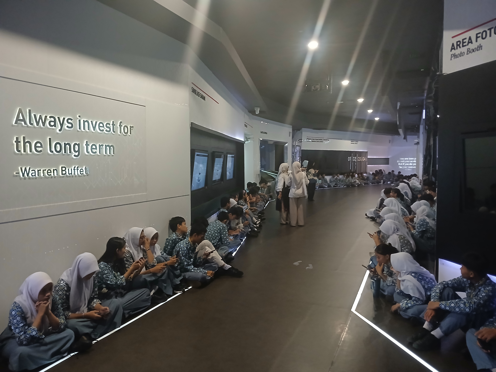
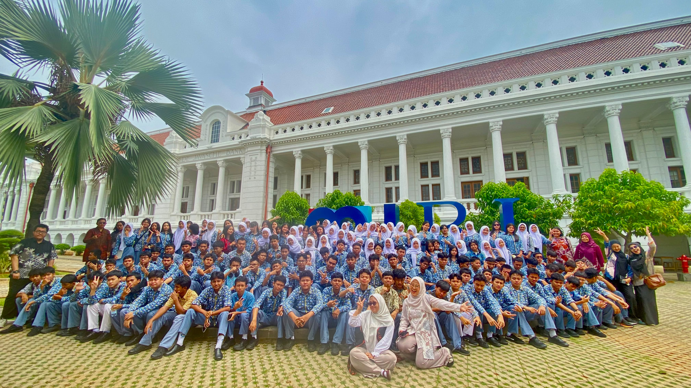

1.Kunjungan ke BEI(Bursa Efek Indonesia)
Pasar modal di Indonesia bermula pada 14 Desember 1912 di Batavia, sempat vakum beberapa kali akibat perang dan transisi kekuasaan, diaktifkan kembali pada 10 Desember 1977, dan resmi beroperasi sebagai BEI pada 1 Desember 2007 setelah penggabungan Bursa Efek Jakarta dan Bursa Efek Surabaya.



2.Kunjungan ke MUBI(Museum Bank Indonesia)
Menempati bekas gedung De Javasche Bank yang dibangun pada tahun 1828 dengan gaya arsitektur neoklasik berpadu sentuhan lokal, dan ditetapkan sebagai bangunan cagar budaya. Dibuka untuk umum pada 15 Desember 2006 dan diresmikan pada 19 Juli 2009.


3. Kesimpulan Dari Kunjungan Ke BEI dan MUBI
Kesimpulan dan pengalaman yang saya rasakan saat kunjungan adalah belajar hal baru dan pengalaman baru seperti di BEI bisa mengenal tentang investasi dan keuangan sedangkan saat ke museum bank Indonesia kita bisa mengenal sejarah terciptanya bank Indonesia krisis keuangan yang di alami Indonesia dari masa lalu dan masih banyak lagi yang menarik serta di jam tertentu kita bisa menonton film di museum bank Indonesia secara gratis

